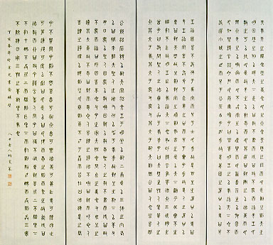

義助慰安婦 —— 李敖百件珍藏義賣藝術品（第18件） 品 名： A18. 關文彬篆孝經四屏 預估價： 40 萬 成交價： （保留） 說 明： 這是清朝老儒關文彬八十歲時寫給他兒子關棠的篆文，內容涵蓋《孝經》第七章到第十章的原文：「夫孝天之經也，地之義也，民之行也。……雖日用三牲之養，猶為不孝也。」中國傳統思想講究以孝治天下，是以有《孝經》的流傳。從這四條屏，可見前輩知識份子篆書的功力與思想的主要型態。 
這是清朝老儒關文彬八十歲時寫給他兒子關棠的篆文，內容涵蓋《孝經》第七章到第十章的原文：「夫孝天之經也，地之義也，民之行也。……雖日用三牲之養，猶為不孝也。」中國傳統思想講究以孝治天下，是以有《孝經》的流傳。從這四條屏，可見前輩知識份子篆書的功力與思想的主要型態。